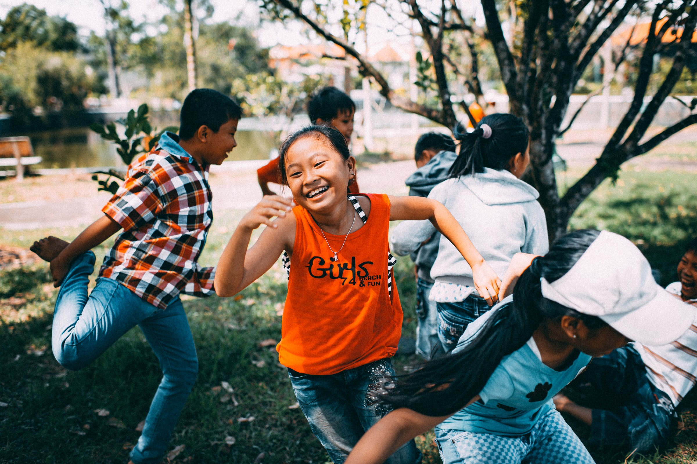
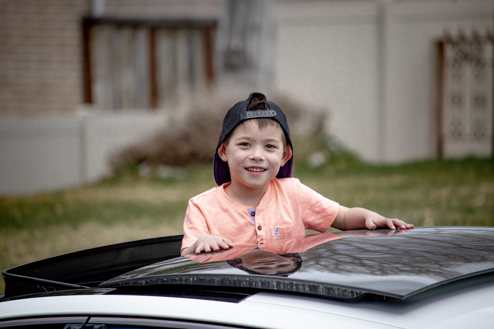
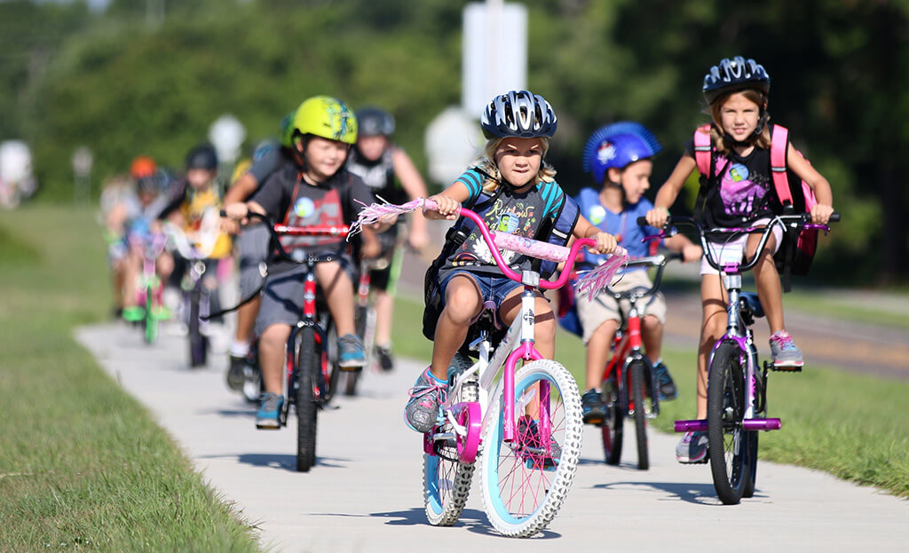

We consult with school communities and other stakeholders to identify school transportation challenges and opportunities.
Leading to healthier, happier, and more alert learners.
That enables students to engage with neighbours and socialize on the way to school.
In turn decreasing traffic congestion, greenhouse gas emissions, and air pollution.
To develop habits early in life to carry into adulthood.
The program is a partnership between the City of Vancouver and School Board, and is a direct outcome of our Transportation 2040 Plan.
The program also supports our Climate Emergency Action Plan targets
Encourage more children and their families to walk, cycle, and roll to school.
Improve walking and cycling infrastructure around schools.
Increase education and awareness around active transportation